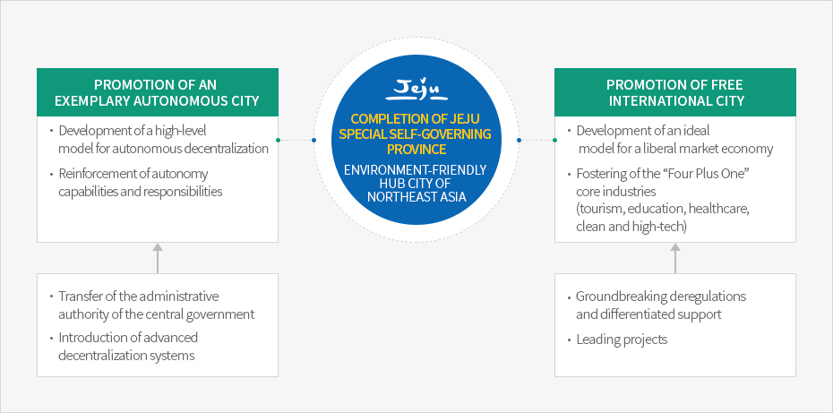

Jeju Special Self-Governing Province
- Home
- General Status
- Administration · Economy
- Jeju Special Self-Governing Province
Jeju Special Self-Governing Province, a Role Model for Korea’s Autonomous Decentralization
What is a Special Self-Governing Province?
A special self-governing province is one in which a high level of self-governing authority is guaranteed, as opposed to the authority granted to other ordinary provinces. Such provinces are endowed with exceptional authority commensurate with regional conditions so that they can make autonomous policy decisions and take responsibility for their own governance.
※ A special self-governing province is a type of metropolitan local government and is classified into one of the following two categories according to Article 2(1) of the Local Autonomy Act.
- 1. Seoul Metropolitan City, metropolitan city, special self-governing city, province, special self-governing province
- 2. Si, Gun, Gu
Jeju Special Self-Governing Province
Jeju Special Self-Governing Province was established to reflect the regional, historical, and humanistic features of Jeju Island and to guarantee a high level of self-governing authority based on autonomy, responsibility, creativity, and diversity. This system allows for practical decentralization and development of an environment-friendly free international city through extensive administrative deregulation, application of international standards, management of environmental resources, and other measures which will eventually contribute to the improved welfare of Jeju residents and national development.Establishment of Jeju Special Self-Governing Province
The National Assembly passed the Special Act on the Establishment of Jeju Special Self-Governing Province and the Development of the Free International City during a plenary session on February 9, 2006. Based on this Special Act, the former “Jeju Province” officially became “Jeju Special Self-Governing Province” with its new legal status and title effective as of July 1, 2006.
Accordingly, Jeju has acquired autonomy, including self-legislative power, self-governing administration, rights of self-organizing and personnel administration, and financial autonomy. In addition, the special self-governing province has adopted an advanced decentralization model which incorporates an educational autonomy system and an autonomous police system, in contrast to other ordinary local governments.
Status of Jeju Special Self-Governing Province
Over the decade following the launch of the special self-governing province, 4,660 types of authority were transferred to Jeju from the central government. This has laid the foundation for the promotion of core industries, including tourism, education, healthcare, clean and high-tech, and for the development of environment-friendly industries. In this regard, Jeju has become a leading role model for internalization and decentralization. Basic Concept of Jeju Special Self-Governing Province


Completion of Jeju Special Self-Governing Province - - Environment-friendly hub city of Northeast Asia
-
Promotion of an Exemplary Autonomous City
- Development of a high-level model for autonomous decentralization
- Reinforcement of autonomy capabilities and responsibilities
- Transfer of the administrative authority of the central government
- Introduction of advanced decentralization systems
-
Promotion of Free International City
- Development of an ideal model for a liberal market economy
- Fostering of the “Four Plus One” core industries (tourism, education, healthcare, clean and high-tech)
- Groundbreaking deregulations and differentiated support
- Leading projects